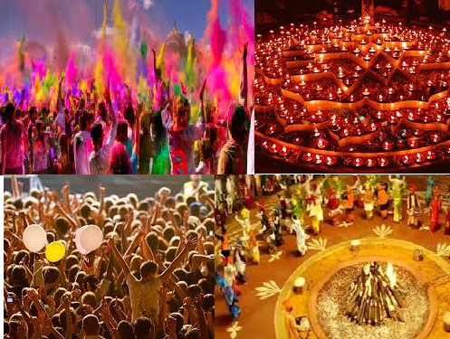

A festival or gala is an event ordinarily staged by a community,
centering on and celebrating some unique aspect of that community and its traditions,
often marked as a local or national holiday, mela or eid.
Festivals often serve to meet specific purposes, especially in regard to commemoration and/or thanksgiving.
They are associated with celebration and may also provide entertainment,
which is particularly important to local communities before the advent of mass-produced entertainment.
